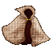
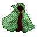
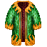
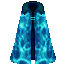
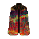
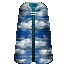

| Picture | Name | Description | What it does | Where it's from |
 |
Auto cloak | A finely woven woolen cloak | +2, Prot Fire/Ice |
Kill Automoton |
 |
Kaldor-like robe | A finely woven woolen robe | +3 Prot from assault Prot from fire |
Randomly found in Haunts under juntes |
|
Kaldor robe | A finely woven woolen robe | +3 Prot from assault Prot from fire |
Kill Kaldor |
 |
Fungus robe | a cloak made from pale-green fungus fibre | +2, Fire/Ice prot | - |
 |
Red robe | A cloak woven from a reddish fabric trimmed with gold braid. | +2, Prot Fire/Ice, Psi mirror | Kill Lori |
 |
Yellow robe | A bright, yellow robe with a charred fringe of silk around the hem. | +4, Prot fire | Kill Evil Timmeh, or find random from a npc |
|
Yellow robe | A bright, yellow robe with a charred fringe of silk around the hem. | +5, Prot fire | Kill Mr.a |
 |
Juntes robe | A dark cloak with a trim of gold braid on the sleeves and collar | Prot fire | Kill Juntes |
| Padded Juntes robe | A dark cloak with a trim of gold braid on the sleeves and collar padded with strips of yeti fur | +5 Prot fire |
Pad a Juntes robe | |
 |
Guntver robe | A reddish robe made of mummy wrapping coated with the blood of city dwellers. | +2, +7ep regen? | Kill Guntver |
 |
Arun robe | A robe of many colors with gold clasps on the front. | - | Kill Arun |
 |
Wraith robe | A cloak with no distinct pattern that seems to shimmer before your eyes. | +1 psi skills, | Randomly worn by wraith's in the spectre dungeon. |
 |
Elance robe | A strange robe woven from many, unknown fibres. | +2, Direct protection from elance | Worn by the Elance scaler in psi tower. |
 |
Lori robe | A fine dyed-wool robe overlaid with a thin coverlet made of greenish leather. |
Combat adds +4 19 Ep regain Psi cutter |
Kill Lori |
 |
King robe | A powerfully fashioned robe, reminiscent of the ancient barbarian kings, heavy to the touch, made from golden deplurium threads. | 4/4 +100 hp Psi cutter Base AC of 25 barb only |
Trade for it in CC |
 |
Laz brown robe | A cloak fashioned from extremely fine spider silk and deplurium threads depicted in earthen colors. | 3/0 +3 agil 500 earthcrush prot +30 to see hidden |
Random from laz |
 |
Laz bue robe | A cloak fashioned from extremely fine spider silk and deplurium threads depicting clouds in a wave pattern. | 3/0 +3 agil 500 shockwave prot +30 to see hidden |
Random from laz |
 |
Undead Robe | A brown, rotting, deathly robe made from the skin of the dead. | 0/1 to 0/5 depending on the floor its found on | Ud-1 through Ud-5 |
 |
Lani robe | A scintillating rove of the archmagi, covered in blue, green, and orange deplurium threads (Level 35 to wear) |
0/8 +35 ep regain Anti-steve Psi-Cutter |
Kill Lani |